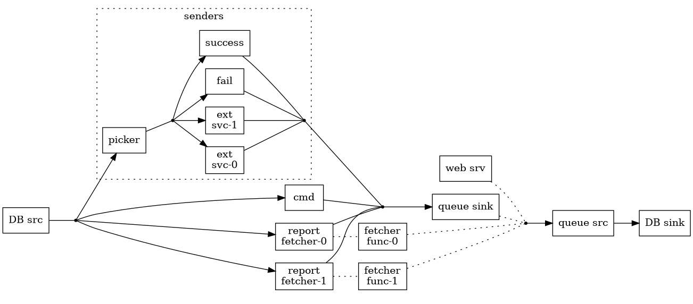

Magnus web site
Random stuff
Architecture of a service
Early this summer it was finally time to put this one service I've been working on into our sandbox environment. It's been running without hickups so last week I turned it on for production as well. In this post I thought I'd document the how and why of the service in the hope that someone will find it useful.
The service functions as an interface to external SMS-sending services, offering a single place to change if we find that we are unhappy with the service we're using.1 This service replaces an older one, written in Ruby and no one really dares touch it. Hopefully the Haskell version will prove to be a joy to work with over time.
Overview of the architecture
The service is split into two parts, one web server using scotty, and streaming data processing using conduit. Persistent storage is provided by a PostgreSQL database. The general idea is that events are picked up from the database, acted upon, which in turn results in other events which written to the database. Those are then picked up and round and round we go. The web service accepts requests, turns them into events and writes the to the database.
Hopefully this crude diagram clarifies it somewhat.

There are a few things that might need some explanation
In the past we've wanted to have the option to use multiple external SMS services at the same time. One is randomly chosen as the request comes in. There's also a possibility to configure the frequency for each external service.
Picker implements the random picking and I've written about that earlier in Choosing a conduit randomly.
Success and fail are dummy senders. They don't actually send anything, and the former succeeds at it while the latter fails. I found them useful for manual testing.
Successfully sending off a request to an external SMS service, getting status 200 back, doesn't actually mean that the SMS has been sent, or even that it ever will be. Due to the nature of SMS messaging there are no guarantees of timeliness at all. Since we are interested in finding out whether an SMS actually is sent a delayed action is scheduled, which will fetch the status of a sent SMS after a certain time (currently 2 minutes). If an SMS hasn't been sent after that time it might as well never be – it's too slow for our end-users.
This is what report-fetcher and fetcher-func do.
- The queue sink and queue src are actually
sourceTQueueandsinkTQueue. Splitting the stream like that makes it trivial to push in events by usingwriteTQueue. - I use
sequenceConduitsin order to send a single event to multiple =Conduit=s and then combine all their results back into a single stream. The ease with which this can be done in conduit is one of the main reasons why I choose to use it.2
Effects and tests
I started out writing everything based on a type like ReaderT <my cfg type> IO
and using liftIO for effects that needed lifting. This worked nicely while I
was setting up the basic structure of the service, but as soon as I hooked in
the database I really wanted to do some testing also of the effectful code.
After reading Introduction to Tagless Final and The ReaderT Design Patter, playing a bit with both approaches, and writing Tagless final and Scotty and The ReaderT design pattern or tagless final?, I finally chose to go down the route of tagless final. There's no strong reason for that decision, maybe it was just because I read about it first and found it very easy to move in that direction in small steps.
There's a split between property tests and unit tests:
- Data types, their monad instances (like JSON (de-)serialisation), pure functions and a few effects are tested using properties. I'm using QuickCheck for that. I've since looked a little closer at hedgehog and if I were to do a major overhaul of the property tests I might be tempted to rewrite them using that library instead.
- Most of the =Conduit=s are tested using HUnit.
Configuration
The service will be run in a container and we try to follow the 12-factor app rules, where the third one says that configuration should be stored in the environment. All previous Haskell projects I've worked on have been command line tools were configuration is done (mostly) using command line argument. For that I usually use optparse-applicative, but it's not applicable in this setting.
After a bit of searching on hackage I settled on etc. It turned out to be nice
an easy to work with. The configuration is written in JSON and only specifies
environment variables. It's then embedded in the executable using file-embed.
The only thing I miss is a ToJSON instance for Config – we've found it
quite useful to log the active configuration when starting a service and that
log entry would become a bit nicer if the message was JSON rather than the
(somewhat difficult to read) string that Config's Show instance produces.
Logging
There are two requirements we have when it comes to logging
- All log entries tied to a request should have a correlation ID.
- Log requests and responses
I've written about correlation ID before, Using a configuration in Scotty.
Logging requests and responses is an area where I'm not very happy with scotty.
It feels natural to solve it using middleware (i.e. using middleware) but the
representation, especially of responses, is a bit complicated so for the time
being I've skipped logging the body of both. I'd be most interested to hear of
libraries that could make that easier.
Data storage and picking up new events
The data stream processing depends heavily on being able to pick up when new
events are written to the database. Especially when there are more than one
instance running (we usually have at least two instance running in the
production environment). To get that working I've used postgresql-simple's
support for LISTEN and NOTIFY via the function getNotification.
When I wrote about this earlier, Conduit and PostgreSQL I got some really good feedback that made my solution more robust.
Delayed actions
Some things in Haskell feel almost like cheating. The light-weight threading
makes me confident that a forkIO followed by a threadDelay (or in my case,
the ones from unliftio) will suffice.
Footnotes:
It has happened in the past that we've changed SMS service after finding that they weren't living up to our expectations.
A while ago I was experimenting with other streaming libraries, but I gave up on getting re-combination to work – Zipping streams
Flycheck and HLS
I've been using LSP for most programming languages for a while now. HLS is
really very good now, but I've found that it doesn't warn on quite all things
I'd like it to so I find myself having to swap between the 'lsp and
'haskell-ghc checkers. However, since flycheck supports chaining checkers I
thought there must be a way to have both checkers active at the same time.
The naive approach didn't work due to load order of things in Spacemacs so I had to experiment a bit to find something that works.
The first issue was to make sure that HLS is available at all. I use shell.nix
together with direnv extensively and I had noticed that lsp-mode tried to load
HLS before direnv had put it in the $PATH. I think the
'lsp-beforeinitialize-hook is the hook to use for this:
(add-hook 'lsp-before-initialize-hook #'direnv-update-environment))
I made a several attempt to chain the checkers but kept on getting
errors due to the 'lsp checker not being defined yet. Another problem
I ran into was that the checkers were chained too late, resulting in
having to manually run flycheck-buffer on the first file I opened.
(Deferred loading is a brilliant thing, but make some things really
difficult to debug.) After quite a bit of experimenting and reading the
description of various hooks I did find something that works:
(with-eval-after-load 'lsp-mode (defun magthe:lsp-next-checker () (flycheck-add-next-checker 'lsp '(warning . haskell-ghc))) (add-hook 'lsp-lsp-haskell-after-open-hook #'magthe:lsp-next-checker))
Of course I have no idea if this is the easiest or most elegant solution but it does work for my testcases:
- Open a file in a project,
SPC p l- choose project - choose a Haskell file. - Open a project,
SPC p lfollowed byC-d, and then open a Haskell file.
Suggestions for improvements are more than welcome, of course.
Haskell, Nix and using packages from GitHub
The other day I bumped into what turned out to be a bug in Amazonka where
sockets weren't closed in a timely fashion and thus the process ran out of file
descriptors. Some more digging and an issue later I found that a fix most likely
already in place (mine was possibly a duplicate of an older issue). Now I only
had to verify if that was the case by using the most recent, and unreleased code
on the develop branch of Amazonka.
My first thought was to attempt to instruct Cabal to build the bits of Amazonka
I need by putting a few source-repository-package stanzas in my config. That
quickly started to look like a bit of a rabbit hole, so I decided to use Nix
instead. After finding the perfect SO post and looking up yet again how to do
overrides for Haskell I ran cabal2nix for the three packages I need:
cabal2nix --no-haddock --no-check --subpath amazonka \ git://github.com/brendanhay/amazonka.git > amazonka.nix cabal2nix --no-haddock --no-check --subpath core \ git://github.com/brendanhay/amazonka.git > amazonka-core.nix cabal2nix --no-haddock --no-check --subpath amazonka-sqs \ git://github.com/brendanhay/amazonka.git > amazonka-sqs.nix
The relevant part of the old Nix expression looked like this:
thePkg = haskellPackages.developPackage { root = lib.cleanSource ./.; name = name; modifier = (t.flip t.pipe) [hl.dontHaddock hl.enableStaticLibraries hl.justStaticExecutables hl.disableLibraryProfiling hl.disableExecutableProfiling]; };
After adding the overrides it looked like this
hp = haskellPackages.override { overrides = self: super: { amazonka-core = self.callPackage ./amazonka-core.nix {}; amazonka = self.callPackage ./amazonka.nix {}; amazonka-sqs = self.callPackage ./amazonka-sqs.nix {}; }; }; thePkg = hp.developPackage { root = lib.cleanSource ./.; name = name; modifier = (t.flip t.pipe) [hl.dontHaddock hl.enableStaticLibraries hl.justStaticExecutables hl.disableLibraryProfiling hl.disableExecutableProfiling]; };
After a somewhat longer-than-usual build I could verify that I had indeed bumped into the same issue and my issue was a duplicate.
Combining Amazonka and Conduit
Combining amazonka and conduit turned out to be easier than I had expected.
Here's an SNS sink I put together today
snsSink :: (MonadAWS m, MonadIO m) => T.Text -> C.ConduitT Value C.Void m () snsSink topic = do C.await >>= \case Nothing -> pure () Just msg -> do _ <- C.lift $ publishSNS topic (TL.toStrict $ TL.decodeUtf8 $ encode msg) snsSink topic
Putting it to use can be done with something like
foo = do ... awsEnv <- newEnv Discover runAWSCond awsEnv $ <source producing Value> .| snsSink topicArn where runAWSCond awsEnv = runResourceT . runAWS awsEnv . within Frankfurt . C.runConduit
Better Nix setup for Spacemacs
In an earlier post I documented my setup for getting Spacemacs/Emacs to work with Nix. I've since found a much more elegant solution based on
- direnv, and
- emacs-direnv
No more Emacs packages for Nix and no need to defining functions that wrap
executables in an invocation of nix-shell.
There's a nice bonus too, with this setup I don't need to run nix-shell, which
always drops me at a bash prompt, instead I get a working setup in my shell of
choice.
Setting up direnv
The steps for setting up direnv depends a bit on your setup, but luckily I
found the official instructions for installing direnv to be very clear and
easy to follow. There's not much I can add to that.
Setting up Spacemacs
Since emacs-direnv isn't included by default in Spacemacs I needed to do a bit
of setup. I opted to create a layer for it, rather than just drop it in the list
dotspacemacs-additional-packages. Yes, a little more complicated, but not
difficult and I nurture an intention of submitting the layer for inclusion in
Spacemacs itself at some point. I'll see where that goes.
For now, I put the following in the file
~/.emacs.d/private/layers/direnv/packages.el:
(defconst direnv-packages '(direnv)) (defun direnv/init-direnv () (use-package direnv :init (direnv-mode)))
Setting up the project folders
In each project folder I then add the file .envrc containing a single line:
use_nix
Then I either run direnv allow from the command line, or run the
function direnv-allow after opening the folder in Emacs.
Using it
It's as simple as moving into the folder in a shell – all required envvars are set up on entry and unset on exit.
In Emacs it's just as simple, just open a file in a project and the envvars are set. When switching to a buffer outside the project the envvars are unset.
There is only one little caveat, nix-build doesn't work inside a Nix shell. I
found out that running
IN_NIX_SHELL= nix-build
does work though.